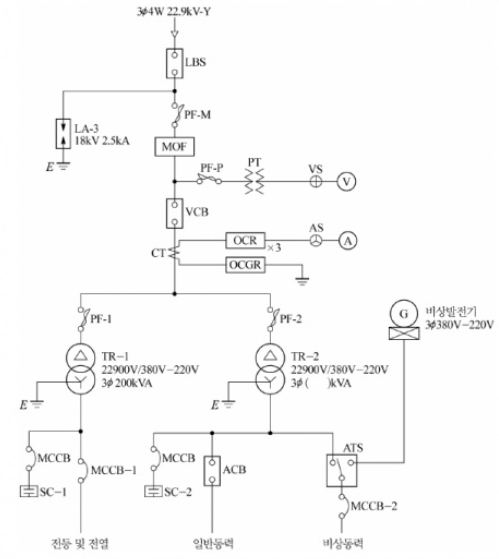
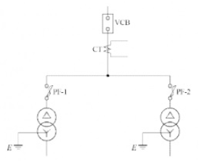
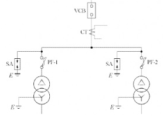
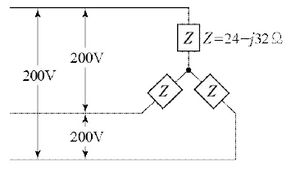
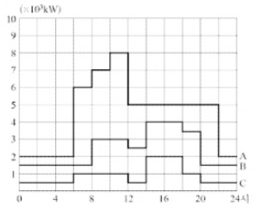
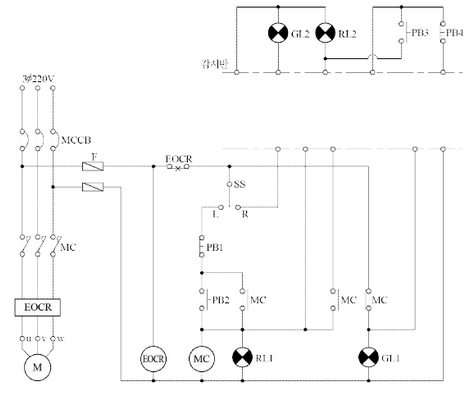
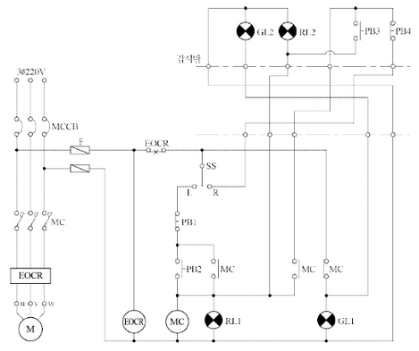

변압기와 모선 또는 이를 지지하는 애자는 ( — )에 의하여 생기는 기계적 충격에 견디는 강도를 가져야 한다.
정답단락전류
부분점수 | 점수 | 세부기준 | |—|—| | 5점 | 정답을 정확하게 작성한 경우만 5점 획득 |
기술기준 제23조(발전기 등의 기계적 강도)
① 발전기, 변압기, 조상기, 모선 또는 이를 지지하는 애자는 단락전류에 의하여 생기는 기계적 충격에 견디어야 한다.
② 수차 또는 풍차 발전기의 회전 부분은 무구속 속도에 대하여 증기 터빈, 가스 터빈, 내연 기관은 비상속도에 견디어야 한다.
발전기의 기동용량(\(S_{start}\))은 500 kVA 이고, 기동시 전압강하는 20%, 과도리액턴스는 25% 이다.
전압강하를 고려한 기동 전류는 다음과 같이 계산할 수 있다.
\[ I*{start} = \frac{S*{start}}{V} = \frac{500}{V} \]
전압강하(\(\Delta\) V)는 20% 이므로,
\[ \Delta V = 0.2V \]
과도리액턴스(\(X_t\))는 25% 이므로,
\[ X_t = 0.25 \]
전압강하는 과도리액턴스에 의해 발생하므로, 다음과 같은 관계식을 세울 수 있다.
\[ \Delta V = I\_{start} X_t \]
\[ 0.2V = \frac{500}{V} \times 0.25 \]
\[ V^2 = \frac{500 \times 0.25}{0.2} = 625 \]
\[ V = 25 \]
따라서, 발전기의 최소용량은 다음과 같이 계산된다.
\[ S\_{min} = \frac{500}{0.8} = 625 [kVA] \]
정답 625 kVA
해설) 단순 계산형 / 난이도 하
정답[계산과정] \[ 자가 발전기의 최소용량 = \left(\frac{1}{0.2} - 1\right) \times 0.25 \times 500 = 500 [kVA] \]
정답 500 [kVA]
부분점수
| 점수 | 세부기준 |
|---|---|
| 5점 | 계산과정과 정답이 모두 맞은 경우 5점 획득 |
| 0점 | 계산과정이나 정답에 오류가 있는 경우 0점 |
해설
\[ 발전기 정격용량 = \left(\frac{1}{\text{허용 전압강하}} - 1\right) \times \text{기동 용량} \times \text{과도 리액턴스} [kVA] \]
① 변압기 2차측 단락전류
정답② 배선용 차단기의 최소 차단전류 [kA]
정답\[ I\_{2n} = \frac{500 \times 10^3}{\sqrt{3} \times 380} = 759.67 \text{ [A]} \]
정답 759.67 [A]
① 변압기 2차측 단락전류
\[ I\_{2s} = \frac{100}{5} \times 759.67 = 15,193.4 \text{ [A]} \]
정답 15,193.4 [A]
② 15.2 [kA]
\[ P_s = \frac{100}{5} \times 500 = 10,000 \text{ [kVA]} = 10 \text{ [MVA]} \]
정답 10 [MVA]
부분점수
| 점수 | 세부기준 |
|---|---|
| 6점 | (1), (2), (3)번이 모두 맞은 경우 6점 획득 |
| 2점 | (1), (2), (3)번 중 한 문항이 맞을 때마다 2점씩 획득 |
해설) 단순 계산형+단답 암기형 / 난이도 中
먼저 펌프용 전동기 용량을 계산한 후 변압기 1대의 정격용량을 계산한다.
\[ P = \frac{9.8 \times 0.2 \times 15 \times 1.1}{0.55 \times 0.9} = 65.33 \text{ [kVA]} \]
\[ P_1 = \frac{65.33}{\sqrt{3}} = 37.72 \text{ [kVA]} \]
정답 37.72 [kVA]
부분점수 | 점수 | 세부기준 | |—|—| | 5점 | (1), (2)번이 모두 맞은 경우 5점 획득 | | 3점 | (1)번이 계산과정과 정답이 모두 맞은 경우 3점 획득 | | 2점 | (2)번만 맞은 경우 2점 획득 |
해설
펌프의 용량은 다음 식으로 계산한다.
\[ P = \frac{9.8qHK}{\eta} = \frac{QHK}{6.12\eta} \text{ [kW]} \]
\[ _ P: 전동기 용량 [kW] \] \[ _ q: 양수량 [m³/sec] \] \[ _ Q: 양수량 [m³/min] \] \[ _ H: 양정(낙차)[m] \] \[ _ \eta: 펌프의 효율 \] \[ _ K: 여유계수(1.1~1.2 정도) \]
해설) 서술 암기형 + 단답 암기형 / 난이도 중
\[ \eta = \frac{출력}{출력 + 손실} \times 100 [%] \]
변압기는 철손과 동손이 같을 때 최고 효율이 된다.
| 점수 | 세부 기준 |
|---|---|
| 6~0점 | (1), (2), (3)번 중 한 문항이 맞을 때마다 2점씩 획득 |
해설
변압기의 효율을 구하는 공식
① 정격 부하시
\[ \eta = \frac{V*{2n}I*{2n}\cos\theta}{V*{2n}I*{2n}\cos\theta + P*i + I*{2n}^2r_2} \times 100 [%] \]
② 전부하 시의 m 부하로 운전 시
\[ \eta = \frac{m V*{2n}I*{2n}\cos\theta}{m V*{2n}I*{2n}\cos\theta + P*i + m^2I*{2n}^2r_2} \times 100 [%] \]
다음과 같은 3φ 4W, 22.9[kV] 수전설비 단선결선도를 보고 물음에 답하시오. [배점: 8점]

① 우리말의 명칭을 쓰시오.
정답 피뢰기
② 기능과 역할을 구분하여 간단히 설명하시오.
정답③ 같은 용도로 사용되는 기기를 2종류 쓰시오.
정답 서지어레스터(Surge arrester), 금속산화물바리스터(MOV)
| 구분 | 설비용량 [kW] | 효율 [%] | 역률 [%] | 입력환산 [kVA] | ||
|---|---|---|---|---|---|---|
| 전등 및 전열 | 350 | 100 | 80 | 438 | ||
| 일반동력 | 635 | 85 | 90 | 706 | ||
| 비상동력 | ||||||
| 유도전동기1 | 15 | 85 | 90 | 18 | ||
| 유도전동기2 | 11 | 85 | 90 | 13 | ||
| 유도전동기3 | 15 | 85 | 90 | 18 | ||
| 비상조명 | 8 | 100 | 90 | 9 | ||
| \[ | **소계** | **1023** | | | **1202** | \] |
[조건]
가장 큰 유도전동기(15kW)를 기준으로 계산합니다.
정답 300 kVA
정답

① 우리말의 명칭: 부하개폐기
② 기능과 역할:
③ 같은 용도로 사용되는 기기:
| 구분 | 설비용량 [kW] | 효율 [%] | 역률 [%] | 입력환산 [kVA] | ||
|---|---|---|---|---|---|---|
| 전등 및 전열 | 350 | 100 | 80 | 437.5 | ||
| 일반동력 | 635 | 85 | 90 | 830 | ||
| 유도전동기 1 | 7.5 × 2 | 85 | 90 | 19.6 | ||
| 유도전동기 2 | 11 | 85 | 90 | 14.3 | ||
| 유도전동기 3 | 15 | 85 | 90 | 19.6 | ||
| 비상조명 | 8 | 100 | 90 | 8.8 | ||
| \[ | **소계** | - | - | - | **62.3** | \] |
\[ PG_3 = \left( \frac{49-15}{0.85} + 15 \times 7.2 \times 1 \times 0.4 \right) \times \frac{1}{0.9} = 92.44 \text{ [kVA]} \]
정답 92.44 [kVA]

(부분점수)
| 점수 | 세부기준 |
|---|---|
| 8점 | (1), (2), (3), (4)번이 모두 맞은 경우 8점 획득 |
| 3점 | (4)번이 맞은 경우 3점 획득 |
| 1점 | (3)번이 맞은 경우 1점 획득 |
| 4점 | (1), (2)번은 한 문항이 맞을 때마다 2점씩 획득 |
(해설)
[부하개폐기(LBS: Load Breaking Switch)]
① 정상상태시 전로를 개폐 및 통전, 단락상태시 이상전류의 일정 시간 통전 가능. ② 변압기 운전·정지 등 부하전류가 흐르고 있는 회로의 개폐 목적으로 사용.
[발전기의 용량 계산]
발전기를 기동하여 부하에 사용 중 최대 기동 전류를 갖는 전동기를 마지막으로 기동할 때 필요한 용량(kVA)은 다음 식으로 구한다.
\[ PG*3 = \left[ \sum P_L - P_m + \left( P_m \cdot \beta \cdot C \cdot P*{f_m} \right) \right] \times \frac{1}{\cos \theta_L} \text{ [kVA]} \]
\[ _ \sum P_L: 부하의 출력 합계 [kW] \] \[ _ P*m: 최대 기동전류를 갖는 전동기 또는 전동기 군의 출력 [kW] \] \[ * \eta: 부하의 종합효율(불분명 시 0.85 적용) \] \[ _ \beta: 전동기 기동계수 \] \[ _ C: 전동기 방식에 따른 계수 \] \[ _ \cos \theta_L: 부하의 종합역률(불분명시 0.8 적용) \] \[ \* P_{f_m}: 최대 기동전류를 갖는 전동기 기동 시의 역률(불분명시 0.4 적용) \]

\[ Z = 24 - j32 \Omega \]
정답해설) 단순 계산형 / 난이도 中
정답\[ P = \frac{3 \times \left(\frac{200}{\sqrt{3}}\right)^2 \times 24}{24^2 + 32^2} = 600 [W] \]
정답 600 [W]
부분점수
| 점수 | 세부기준 |
|---|---|
| 5점 | 계산과정이나 정답에 오류가 없는 경우 5점 획득 |
| 0점 | 계산과정이나 정답에 오류가 있는 경우 0점 |
해설
회로에서 소비되는 전력을 구하는 식을 다음과 같이 유도할 수 있다.
\[ V_p = \frac{V_l}{\sqrt{3}} [V] \]
\[ P = 3I^2R = 3\left(\frac{V_p}{Z}\right)^2 R = 3\left(\frac{V_p}{\sqrt{R^2 + X^2}}\right)^2 R = \frac{3V_p^2R}{R^2 + X^2} [W] \]
정답 ① ② ③ ④ ⑤
| 점수 | 세부기준 |
|---|---|
| 5~0점 | 한 문항을 맞힐 때마다 1점씩 획득 |
[조건]
해설) 복합 계산형 / 난이도 中
\[ N = \frac{300 \times 20 \times 50 \times 1.3}{4,600 \times 0.5} = 169.57 \]
정답 170[등]
\[ n = \frac{170 \times 0.87}{16} = 9.24 \]
정답 16 [A] 분기 10회로
부분점수
| 점수 | 세부기준 |
|---|---|
| 6점 | (1), (2)번이 모두 맞은 경우 6점 획득 |
| 3점 | (1), (2)번 중 한 문항만 맞은 경우 3점 획득 |
해설
형광등 기구 수는 다음 공식으로 구한다.
\[ N = \frac{EAD}{FU} \]
E: 조도[lx], A: 면적[m²], D: 감광보상률, F: 광속[lm], U: 조명률
[조건]
해설) 복합 수식형 / 난이도 중
정답[유도과정]
\[ R = \frac{1}{58} \times \frac{100}{C} \times \frac{L}{A} = \frac{1}{58} \times \frac{100}{97} \times \frac{L}{A} = \frac{1}{56.26} \times \frac{L}{A} \]
\[ e = \sqrt{3}IR = \frac{\sqrt{3}}{56.26} \times \frac{IL}{A} = \frac{1}{32.48} \times \frac{IL}{A} \]
\[ [정답] e = \frac{1}{32.48} \times \frac{IL}{A} \]
부분점수
| 점수 | 세부기준 |
|---|---|
| 4점 | 유도과정과 정답이 모두 맞은 경우 4점 획득 |
| 0점 | 유도과정이나 정답에 오류가 있으면 0점 |
| 전선의 굵기 [mm²] | 전선 최대 길이 [m] |
|---|---|
| 2.5 | 1: 534, 2: 267, 3: 178, 4: 133, 5: 107, 6: 89, 7: 76, 8: 67, 9: 59, 12: 44, 14: 38, 15: 36, 16: 33, 18: 30, 25: 21, 35: 15, 45: 12 |
| 4 | 1: 854, 2: 427, 3: 285, 4: 213, 5: 171, 6: 142, 7: 122, 8: 107, 9: 95, 12: 71, 14: 61, 15: 57, 16: 53, 18: 47, 25: 34, 35: 24, 45: 19 |
| 6 | 1: 1,281, 2: 640, 3: 427, 4: 320, 5: 256, 6: 213, 7: 183, 8: 160, 9: 142, 12: 107, 14: 91, 15: 85, 16: 80, 18: 71, 25: 51, 35: 37, 45: 28 |
| 10 | 1: 2,135, 2: 1,067, 3: 712, 4: 534, 5: 427, 6: 356, 7: 305, 8: 267, 9: 237, 12: 178, 14: 152, 15: 142, 16: 133, 18: 119, 25: 85, 35: 61, 45: 47 |
| 16 | 1: 3,416, 2: 1,708, 3: 1,139, 4: 854, 5: 683, 6: 569, 7: 488, 8: 427, 9: 380, 12: 285, 14: 244, 15: 228, 16: 213, 18: 190, 25: 137, 35: 98, 45: 76 |
| 25 | 1: 5,337, 2: 2,669, 3: 1,779, 4: 1,334, 5: 1,067, 6: 890, 7: 762, 8: 667, 9: 593, 12: 445, 14: 381, 15: 356, 16: 334, 18: 297, 25: 213, 35: 152, 45: 119 |
| 35 | 1: 7,472, 2: 3,736, 3: 2,491, 4: 1,868, 5: 1,494, 6: 1,245, 7: 1,067, 8: 934, 9: 830, 12: 623, 14: 534, 15: 498, 16: 467, 18: 415, 25: 299, 35: 213, 45: 166 |
| 50 | 1: 10,674, 2: 5,337, 3: 3,558, 4: 2,669, 5: 2,135, 6: 1,779, 7: 1,525, 8: 1,334, 9: 1,186, 12: 890, 14: 762, 15: 712, 16: 667, 18: 593, 25: 427, 35: 305, 45: 237 |
| 95 | 1: 20,281, 2: 10,140, 3: 6,760, 4: 5,070, 5: 4,056, 6: 3,380, 7: 2,897, 8: 2,535, 9: 2,253, 12: 1,690, 14: 1,449, 15: 1,352, 16: 1,268, 18: 1,127, 25: 811, 35: 579, 45: 451 |
| 150 | 1: 32,022, 2: 16,011, 3: 10,674, 4: 8,006, 5: 6,404, 6: 5,337, 7: 4,575, 8: 4,003, 9: 3,558, 12: 2,669, 14: 2,287, 15: 2,135, 16: 2,001, 18: 1,779, 25: 1,281, 35: 915, 45: 712 |
| 185 | 1: 39,494, 2: 19,747, 3: 13,165, 4: 9,874, 5: 7,899, 6: 6,582, 7: 5,642, 8: 4,937, 9: 4,388, 12: 3,291, 14: 2,821, 15: 2,633, 16: 2,468, 18: 2,194, 25: 1,580, 35: 1,128, 45: 878 |
| 240 | 1: 51,236, 2: 25,618, 3: 17,079, 4: 12,809, 5: 10,247, 6: 8,539, 7: 7,319, 8: 6,404, 9: 5,693, 12: 4,270, 14: 3,660, 15: 3,416, 16: 3,202, 18: 2,846, 25: 2,049, 35: 1,464, 45: 1,139 |
| 300 | 1: 64,045, 2: 32,022, 3: 21,348, 4: 16,011, 5: 12,809, 6: 10,674, 7: 9,149, 8: 8,006, 9: 7,116, 12: 5,337, 14: 4,575, 15: 4,270, 16: 4,003, 18: 3,558, 25: 2,562, 35: 1,830, 45: 1,423 |
비고 1: 전압강하가 2[%] 또는 3[%]의 경우, 전선길이는 각각 이 표의 2배 또는 3배가 된다. 다른 경우에도 이 예에 따른다.
비고 2: 전류가 20[A] 또는 200[A] 경우의 전선길이는 각각 이 표 전류 2[A] 경우의 1/10 또는 1/100이 된다. 다른 경우에도 이 예에 따른다.
비고 3: 이 표는 평형부하의 경우에 대한 것이다.
비고 4: 이 표는 역률 1로 하여 계산한 것이다.
| 도체 단면적 [mm²] | 전선 본수 |
|---|---|
| 2.5 | 1: 16, 2: 16, 3: 16, 4: 16, 5: 22, 6: 22, 7: 22, 8: 28, 9: 28, 10: 28 |
| 4 | 1: 16, 2: 16, 3: 16, 4: 22, 5: 22, 6: 22, 7: 28, 8: 28, 9: 28, 10: 28 |
| 6 | 1: 16, 2: 16, 3: 22, 4: 22, 5: 22, 6: 28, 7: 28, 8: 28, 9: 36, 10: 36 |
| 10 | 1: 16, 2: 22, 3: 22, 4: 28, 5: 28, 6: 36, 7: 36, 8: 36, 9: 36, 10: 36 |
| 16 | 1: 16, 2: 22, 3: 28, 4: 28, 5: 36, 6: 36, 7: 36, 8: 42, 9: 42, 10: 42 |
| 25 | 1: 22, 2: 28, 3: 28, 4: 36, 5: 36, 6: 42, 7: 54, 8: 54, 9: 54, 10: 54 |
| 35 | 1: 22, 2: 28, 3: 36, 4: 42, 5: 54, 6: 54, 7: 54, 8: 70, 9: 70, 10: 70 |
| 50 | 1: 22, 2: 36, 3: 42, 4: 54, 5: 54, 6: 70, 7: 70, 8: 70, 9: 82, 10: 82 |
| 70 | 1: 28, 2: 42, 3: 54, 4: 54, 5: 70, 6: 70, 7: 70, 8: 82, 9: 82, 10: 92 |
| 95 | 1: 28, 2: 54, 3: 54, 4: 70, 5: 70, 6: 82, 7: 82, 8: 92, 9: 92, 10: 104 |
| 120 | 1: 36, 2: 54, 3: 54, 4: 70, 5: 70, 6: 82, 7: 82, 8: 92, 9: 92, 10: 104 |
| 150 | 1: 36, 2: 70, 3: 70, 4: 82, 5: 92, 6: 92, 7: 104, 8: 104, 9: , 10: |
| 185 | 1: 36, 2: 70, 3: 70, 4: 82, 5: 92, 6: 104, 7: , 8: , 9: , 10: |
| 240 | 1: 42, 2: 82, 3: 82, 4: 92, 5: 104, 6: , 7: , 8: , 9: , 10: |
비고 1: 전선의 1본수는 접지선 및 직류회로의 전선에도 적용한다.
비고 2: 이 표는 실험결과와 경험을 기초로 하여 결정한 것이다.
비고 3 이 표는 KS C IEC 60227-3의 450/740[V] 일반용 단심 비닐 절연전선을 기준한 것이다.
\[ I = \frac{P}{\sqrt{3}V} = \frac{78,980}{\sqrt{3} \times 380} = 120 \text{ [A]} \]
\[ L = \frac{300 \times 120/12}{6/3.8} = 1,900 \text{ [m]} \]
표 1에서 전선 규격 150[mm²] 선정
정답 150[mm²]
표 2에서 150[mm²] 3본에 해당하는 전선관 70[mm] 선정
정답 70[mm]
| 점수 | 세부 기준 |
|---|---|
| 5점 | (1), (2)번이 모두 맞은 경우 5점 획득 |
| 3점 | (1)번만 맞은 경우 3점 획득 |
| 2점 | (2)번만 맞은 경우 2점 획득 |
표의 전류를 계산할 때에는 계산을 간단하게 하기 위하여 부하의 최대 사용 전류를 고려하여 선정한다. 부하의 최대 사용 전류가 120[A] 이므로 표의 전류를 12[A]로 선정하면 \frac{120}{12} = 10이 된다.
\[ 전선 최대 길이 = \frac{\text{배선 설계의 길이 [m]} \times \text{부하의 최대 사용 전류 [A]}}{\text{배선 설계의 전압 강하 [V]}} \text{[m]} \]
정답 ① ②
| 능력 | 회로 분리 | 사고 차단 | ||
|---|---|---|---|---|
| 기구 | 무부하시 | 부하시 | 과부하시 | 부하시 |
| 퓨즈 | ||||
| 차단기 | ||||
| 개폐기 | ||||
| 단로기 | ||||
| 전자 접촉기 |
정답 ① ② ③
해설) 복합 이론형 / 난이도 중
정답| 능력 | 회로 분리 | 사고 차단 | ||
|---|---|---|---|---|
| 기구 | 무부하시 | 부하시 | 과부하시 | 부하시 |
| 퓨즈 | ○ | ○ | ||
| 차단기 | ○ | ○ | ○ | |
| 개폐기 | ○ | ○ | ○ | |
| 단로기 | ○ | |||
| 전자접촉기 | ○ | ○ |
부분점수
| 점수 | 세부기준 |
|---|---|
| 9점 | (1), (2), (3)이 모두 맞은 경우 9점 획득 |
| 5점 | (2)번 표를 정확하게 작성한 경우 5점 획득, 오기입 1개당 1점 감점 |
| 4점 | (1), (3)번은 한 문항이 맞을 때마다 2점씩 획득 |
부하의 특성에 기인하는 전압의 동요에 의하여 조명등이 깜박거리거나 텔레비전 영상이 일그러지는 등의 현상을 플리커라고 한다.
정답① 직렬 콘덴서 방식을 사용한다. ② 3권선 보상 변압기 방식
부분점수
| 점수 | 세부기준 |
|---|---|
| 4~0점 | (1), (2)번 중 한 문항을 맞을 때마다 2점씩 획득 |
해설
[플리커 방지 대책의 구분]
| 구분 | 내용 |
|---|---|
| 전원 측에서의 대책 |
① 전용 계통으로 공급한다. ② 단락용량이 큰 계통에서 공급한다. ③ 전용 변압기로 공급한다. ④ 공급 전압을 승압한다. |
| 수용가 측에서의 대책 |
① 전원 계통에 리액터분을 보상하는 방법: 직렬 콘덴서 방식, 3권선 보상
변압기 방식 ② 전압 강하를 보상하는 방법: 부스터 방식, 상호 보상 리액터 방식 ③ 부하의 무효 전력 변동분을 흡수하는 방법: 동기 조상기와 리액터 방식, 사이리스터(thyristor) 이용 콘덴서 개폐 방식, 사이리스터용 리액터 ④ 플리커 부하 전류의 변동분을 억제하는 방법: 직렬 리액터 방식, 직렬 리액터 가포화 방식 |
해설) 단순 수식형 / 난이도 下
정답\[ I = I_n \left( 1 + \sqrt{\frac{X_c}{0.13 X_L}} \right) = 3.77 I_n \]
정답 3.77배
부분점수
| 점수 | 세부기준 |
|---|---|
| 4점 | 계산과정과 정답이 모두 맞은 경우 4점 획득 |
| 0점 | 계산과정이나 정답에 오류가 있는 경우 0점 |
해설
콘덴서 투입 시 돌입전류는 다음 공식으로 구한다.
\[ I = I_n \left( 1 + \sqrt{\frac{X_c}{X_L}} \right) \]
[조건]

① 첨두부하는 몇 [kW]인지 쓰시오.
정답② 첨두부하가 지속되는 시간은 몇 시부터 몇 시까지인지 쓰시오.
정답③ 하루 공급된 전력량은 몇 [MWh]인지 계산하시오.
정답해설) 복합 계산형 / 난이도 中
[계산과정] 도면을 보면 10~12시에 합성 최대전력이 나타난다.
\[ P = (8 + 3 + 1) \times 10^3 = 12 \times 10^3 \text{ [kW]} \]
정답 12,000 [kW]
\[ [계산과정] 종합 부하율 = \frac{4,500 + 2,400 + 900}{12,000} \times 100 = 65 [%] \]
정답 65 [%]
\[ [계산과정] 부등률 = \frac{(8 + 4 + 2) \times 10^3}{12 \times 10^3} = 1.17 \]
정답 1.17
\[ [계산과정] Q = \frac{8 \times 10^3}{1} \times 0 + \frac{3 \times 10^3}{0.8} \times 0.6 + \frac{1 \times 10^3}{0.6} \times 0.8 = 3,583.33 \text{ [kVar]} \]
\[ \cos\theta = \frac{P}{\sqrt{P^2 + Q^2}} = \frac{12,000}{\sqrt{12,000^2 + 3,583.33^2}} \times 100 = 95.82 [%] \]
정답 95.82 [%]
\[ [정답] ① 첨두부하: 8 \times 10^3, ② 첨두부하의 지속시간: 10~12시 \]
③ 하루에 공급된 전력량[MWh]
\[ [계산과정] 전력량 = (2 \times 6 + 6 \times 2 + 7 \times 2 + 8 \times 2 + 5 \times 10 + 2 \times 2) \times 10^3 = 108 \times 10^3 \text{ [kWh]} = 108 \text{ [MWh]} \]
정답 108 [MWh]
부분점수
| 점수 | 세부기준 |
|---|---|
| 10~0점 | (1)~(5) 문항 중 한 문항이 맞을 때마다 2점씩 획득 |
| 전등의 종류 | 전등의 수명 | 1[cd]당 소비전력 [W] (수명 중의 평균) | 평균 구면광도 [cd] | 1[kWh]당 전력요금 [원] | 전등 단가 [원] |
|---|---|---|---|---|---|
| A | 1,500 시간 | 1 | 38 | 70 | 1,900 |
| B | 1,800 시간 | 1.1 | 40 | 70 | 2,000 |
해설) 단순 계산형 / 난이도 하
전등 A의 전력비[원/시간], 전구비[원/시간]
\[ ① 전력비[원/시간] = 1.0 × 38 × 10⁻³ × 70 = 2.66 \] \[ ② 전구비[원/시간] = \frac{1900}{1500} = 1.27 \] ③ 합계[원/시간] = 3.93
전등 B의 전력비[원/시간], 전구비[원/시간]
\[ ① 전력비[원/시간] = 1.1 × 40 × 10⁻³ × 70 = 3.08 \] \[ ② 전구비[원/시간] = \frac{2000}{1800} = 1.11 \] ③ 합계[원/시간] = 4.19
정답 A 전등이 유리하다.
부분점수
| 점수 | 세부기준 |
|---|---|
| 5점 | 계산과정과 정답이 모두 맞은 경우 5점 획득 |
| 0점 | 계산과정이나 정답에 오류가 있는 경우 0점 |
해설
표의 수치를 기준으로 한 시단당 점등비용을 비교하면 A 전등이 더 저렴하다.

해설) 도면완성 / 난이도 上
정답
부분점수
| 점수 | 세부기준 |
|---|---|
| 5점 | 결선도를 정확하게 작성한 경우에만 5점 획득, 부분점수는 없음 |
[배점: 3점]
정답①
②
③
부분점수
| 점수 | 세부기준 |
|---|---|
| 3~0점 | 소문항 1개마다 1점씩 획득 |